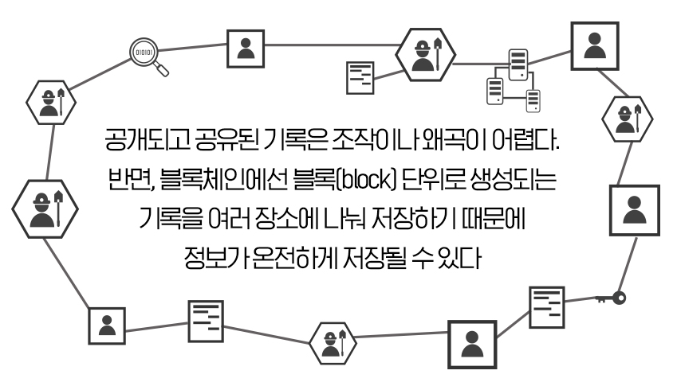

블록체인은 관리 대상 데이터를 '블록'이라고 하는 소규모 데이터들이 P2P 방식을 기반으로 생성된 체인 형태의 연결고리 기반 분산 데이터 저장 환경에 저장하여 누구라도 임의로 수정할 수 없고 누구나 변경의 결과를 열람할 수 있는 분산 컴퓨팅 기술 기반의 원장 관리 기술이다.
이는 근본적으로 분산 데이터 저장기술의 한 형태로, 지속적으로 변경되는 데이터를 모든 참여 노드에 기록한 변경 리스트로서 분산 노드의 운영자에 의한 임의 조작이 불가능하도록 고안되었다. 블록체인 기술은 비트코인을 비롯한 대부분의 암호화폐 거래에 사용된다. 암호화폐의 거래과정은 탈중앙화된 전자장부에 쓰이기 때문에 블록체인 소프트웨어를 실행하는 많은 사용자들의 각 컴퓨터에서 서버가 운영되어, 중앙에 존재하는 은행 없이 개인 간의 자유로운 거래가 가능하다.
